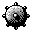
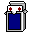
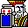
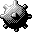
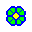
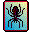
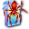
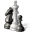

Windows Game Icons
Windows 3.1

In Order:
* The Microsoft Hearts Network
* Minesweeper
* Reversi
* Solitaire
DOWNLOAD
 4 .ico files zipped (Windows) (1.67 KB)
4 .ico files zipped (Windows) (1.67 KB)

Windows NT 3.1

Freecell
DOWNLOAD
.ico file (Windows) (1.80 KB)
Windows 95

Minesweeper
DOWNLOAD
.ico file (Windows) (1.05 KB)
Windows NT 4.0
3D Pinball: Space Cadet
DOWNLOAD
.ico file (Windows) (2.66 KB)
Windows 2000

Prato fiorito (Minesweeper Italian alternative)
DOWNLOAD
.ico file (Windows) (1.06 KB)
Windows ME

In Order:
* Internet Backgammon
* Internet Checkers
* Internet Hearts
* Internet Reversi
* Internet Spades
* Spider Solitaire
DOWNLOAD
6 .ico files zipped (Windows) (4.08 KB)
Windows XP

In Order:
* Prato fiorito (Minesweeper Italian alternative)
* Freecell
* Hearts
* Inkball
* Internet Backgammon
* Internet Checkers
* Internet Hearts
* Internet Reversi
* Internet Spades
* Minesweeper
* 3D Pinball: Space Cadet
* Solitaire
* Spider Solitaire
DOWNLOAD
13 .ico files zipped (Windows) (148 KB)
Windows Longhorn 5219
Shanghai Solitaire (early version of Mahjong Titans)
DOWNLOAD
.ico file (Windows) (288 KB)
Windows Vista



In Order:
* Chess Titans
* Prato fiorito (Minesweeper Italian alternative)
* Freecell
* Hearts
* Mahjong Titans
* Minesweeper
* Purble Place
* Solitaire
* Spider Solitaire
Windows Vista Extras
In Order:
* Hold 'Em
* Inkball
* Tinker
DOWNLOAD
12 .ico files zipped (Windows) (848 KB)
Windows 7

In Order:
* Internet Backgammon
* Internet Checkers
* Internet Spades
DOWNLOAD
3 .ico files zipped (Windows) (187 KB)